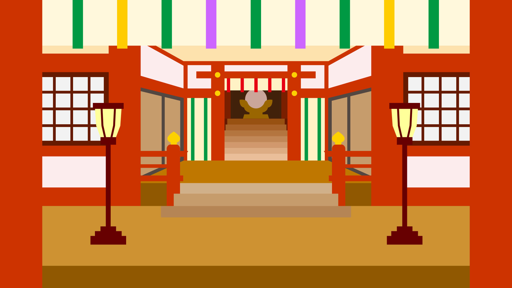

架空神社
ご祈祷の概要
参加概要
予約

神社のご祈祷
ご祈祷の歴史
ご祈祷の起源と日本の伝統
ご祈祷の歴史は古代日本にまでさかのぼり、神道の儀式の中心的な役割を果たしてきました。日本の神社では、平安時代から鎌倉時代にかけて武士や貴族、一般の人々が神に祈りを捧げる儀式として、祈祷が広まりました。時代を経るごとに様々な儀式や方法が加わり、現在に至っています。
ご祈祷の種類と目的
さまざまなご祈祷の種類
神社で行われるご祈祷には、健康祈願、商売繁盛、学業成就、家内安全など、様々な種類があります。例えば、健康祈願は病気や怪我の予防、または健康を願うための祈祷です。商売繁盛は事業の成功を祈るもので、特に新年に行われることが多いです。それぞれの祈祷が持つ目的とその意味について深く理解することが重要です。
ご祈祷の流れと準備
当日の準備と流れ
ご祈祷に参加する際は、事前に予約を行い、当日は指定の時間に神社にお越しください。服装はカジュアルすぎないものが望ましく、特に重要なのは心を込めて祈る姿勢です。受付で祈祷料を納め、神職の指示に従って儀式に臨みます。ご祈祷が終わると、お札やお守りを受け取ることができます。
ご祈祷の効果と体験談
実際の体験談と効果
多くの方がご祈祷を受けた後、心の平安や生活の改善を実感しています。例えば、仕事の悩みや家庭内の問題が解決したという声や、健康が回復したという体験談が寄せられています。精神的な支えや前向きなエネルギーを得ることができ、日々の生活にポジティブな影響を与えることが期待されます。
参加概要
ご祈祷に参加するには、事前に予約が必要です。以下のリンクから予約フォームにアクセスしてください。
※予約には会員登録が必要となります。
まだ会員でない方は
こちら
から会員登録をお願いします。
ご祈祷予約フォーム
ホームページに戻る
© 2024 神社のご祈祷